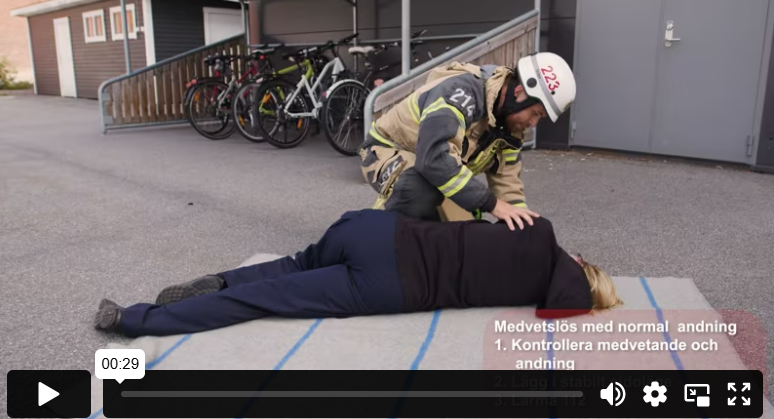

وضع جانبي مستقر
إذا كان الشخص فاقدًا للوعي ويتنفس بشكل طبيعي، أو إذا اضطررت لترك شخص واعي بمفرده لفترة طويلة، يجب وضعه في وضعية الجنب الآمنة. هذا الوضع يحافظ على مجرى الهواء مفتوحًا للشخص فاقد الوعي، لأن اللسان قد يسد مجرى الهواء إذا كان مستلقيًا على ظهره. فقدان الوعي حالة خطيرة قد تزيد من خطر التقيؤ. كما أن وضعية الجنب الآمنة تمنع خطر الاختناق في حال تقيأ الشخص. ضع بطانيات حول الشخص لمنع انخفاض حرارة الجسم واستمر في مراقبة التنفس بشكل منتظم.
